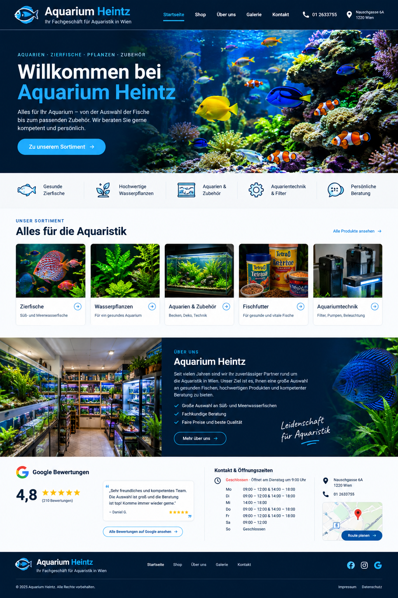

Zierfische
Süß- und Meerwasserfische
Alles für Ihr Aquarium – von der Auswahl der Fische bis zum passenden Zubehör. Persönliche und fachkundige Beratung in Wien.
Unser Sortiment →
Süß- und Meerwasserfische
Für ein gesundes Aquarium
Becken, Deko und Zubehör
Für gesunde und vitale Fische
Filter, Pumpen und Beleuchtung
Ihr Fachgeschäft für Aquaristik in Wien. Wir bieten Zierfische, Wasserpflanzen, Aquarien, Zubehör und Aquarientechnik – mit persönlicher Beratung.
210 Bewertungen laut Google – Stand der von Ihnen bereitgestellten Aufnahme.
📍 Nauschgasse 6A, 1220 Wien